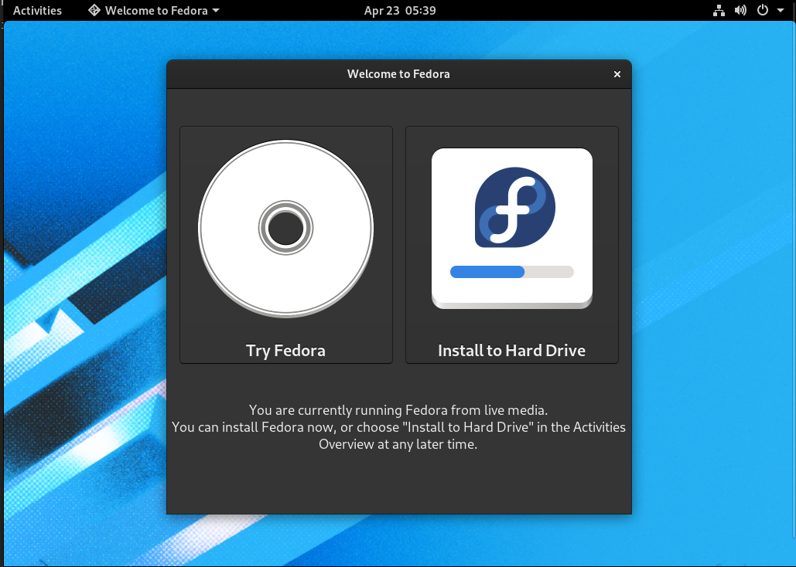
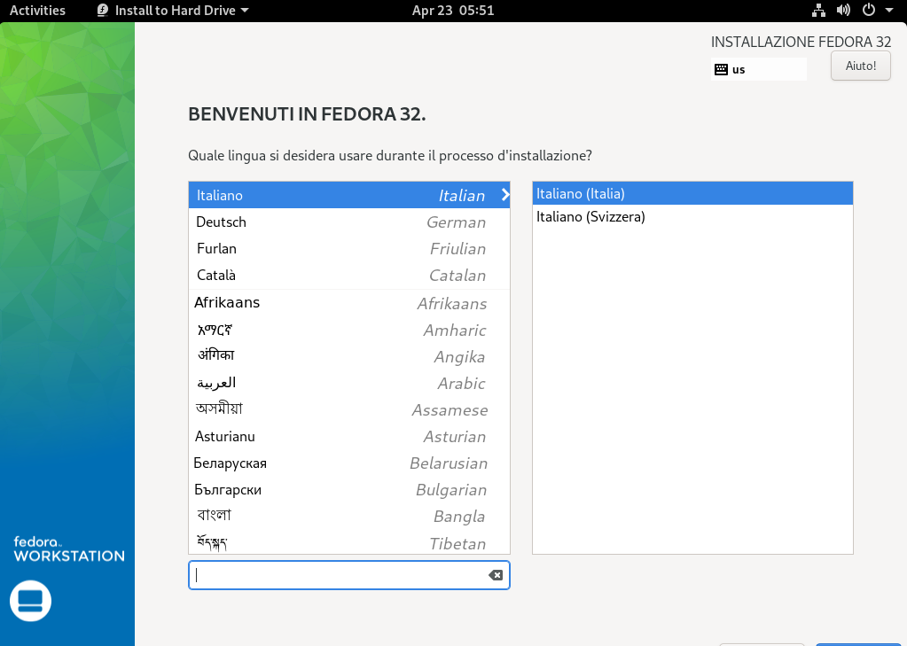
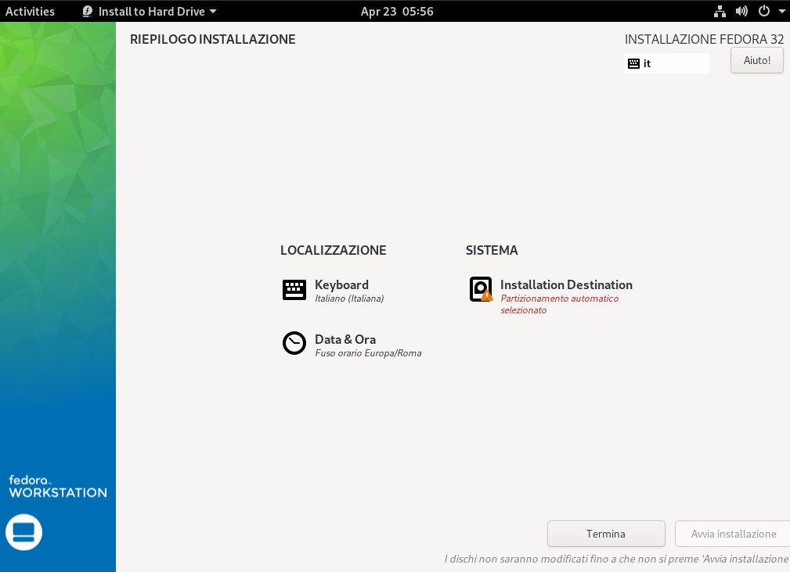

Guida Fedora
In questo documento andremo a vedere le fasi più importanti per configurare al meglio la distribuzione Fedora.
Che cos'è Fedora?
Partiamo dalla sua definizione:
Fesora è un sistema operativo basato su Linux e sui Pacchetti RPM (Red Hat Package Manager).
I pacchetti RPM sono stati pensati da Red Hat, società che finanzia attivamente ed economicamente il progetto stesso Fedora.
Grazie a questo tipo di supporto, Fedora è riuscito a diventare il progetto che è ora.
Cosa ci sarà in questa guida?
In questa guida andremo a vedere:
- Come installare Fedora;
- Come aggiornare Fedora;
- Comr configurarla al meglio dopo l'installazione;
- Come installare LAMP, per poter programmare in PHP.
Come installare Fedora
In questo punto della guida andremo a vedere come installare Fedora, procedendo passo passo.
Preparare l'installazione
1. Scaricare la ISO di installazione
Per prima cosa sarà necessario scaricare la ISO di installazione dal loro sito ufficiale
https://getfedora.org/it/
Qui potrete andare a selezionare la versione WorkStation e quindi procedere con lo scaricamento del file ISO, andando a selezionare preferibilmente (se il vostro computer lo supporti) la versione a 64 bit.
Se avete un computer che supporta solo la versione 32bit, non consiglio di utilizzare questo sistema operativo, visto che non sono rimasti molti software che supportano in modo completo tale architettura ormai datata.
2. Procedere con il download di un tool per masterizzare la ISO
Procedere quindi con lo scaricamento di un tool che vi consentirà di masterizzare la ISO in una chiavetta. Il software che vi consiglio si chiama balenaEtcher
https://www.balena.io/etcher/
3. Scegliere una chiavetta USB
Scegliere almeno una chiavetta USB da 4GB
4. Seguire le istruzioni di balenaEtcher
Seguire le istruzioni del programma per masterizzare la iso nella chiavetta in modo corretto.

Avviare il PC ed eseguite la chiavetta
Riavviate il PC tenendo la chiavetta scollegata. Quando si sta riavviando premete ripetutamente f10 (o canc) a seconda del modello del vostro computer per mostrare il menu di avvio del vostro PC.
Selezionate quindi la vostra chiavetta USB. Fatto questo sarete pronti ad intllare, visto che si sta avviando Fedora.
Procedere con l'installazione
Nella guida utilizzeremo un file ISO di Fedora 32, ma il procedimento è uguale anche con versioni più recenti (come la 33 o 34)
1. Selezionare Installa
Alla richiesta se si vuole provare la distro o procedere con la sua installazione scegliere
 Scegliere l'opzione installa
2. Scegliere la lingua
Procedere con la selezione della lingua. Nel mio caso andrò a scegliere l'italiano.
 Procedere con la scelta della lingua
3. Procedere con le successive fasi di installazione
Procedere quindi, arrivati a questo punto, con l'impostare il vostro disco di installazione e quindi procedere con l'installazione.\ È consigliabile installare Fedora in un disco vuoto, per rendere il procedimento più semplice e limitando al minimo gli eventuali rischi che qualcosa possa andare storto.
 Procedere con la scelta della partizione
4. Procedere con l'installazione vera e propria
Procedere quindi con l'installazione su disco
5. Riavviare
Terminata la fase di installazione che può richiedere circa 10 minuti, riavviare il sistema premurandosi di rimuovere la chiavetta USB dal PC
Prima configurazione
Procediamo quindi con la prima configurazione del sistema
Aggiornare il sistema
Per evitare di utilizzare dei pacchetti obsoleti, andiamo ad aggiornare il sistema. Per fare ciò aprire un terminale
su
dnf upgrade
Terminato l'aggiornamento riavviare il sistema. Quindi sempre da terminale:
reboot
Abilitare RPM Fusion Free e Non Free
Procedere con l'attivazione dei repo free e non free, per poter avere accesso a tutta una serie di software altrimenti non accessibili con i repository di default di Fedora.
RPM Fusion Free
Digitare i seguenti comandi da terminale
su
dnf install \
https://download1.rpmfusion.org/free/fedora/rpmfusion-free-release-$(rpm -E %fedora).noarch.rpm
RPM Fusion Non free
Da terminale digitale
su
dnf install \
https://download1.rpmfusion.org/nonfree/fedora/rpmfusion-nonfree-release-$(rpm -E %fedora).noarch.rpm
Aggiornare i repository
Consiglio di aggiornare i repository facendo da terminale:
dnf upgrade
Riavviare il sistema
Non è obbligatorio, ma lo consiglio:
reboot
Comandi principali
1. Accedere al root
su
oppure
sudo -i
Nel primo caso inserire la password di root, nel secondo la password del proprio utente
2. Aggiornare il sistema
Per aggiornare il sistema
dnf upgrade -
In alcuni casi
dnf update
Dopo l'aggiornamento del sisstema è sempre consigliabile riavviare
reboot
3. Installare, cercare e rimuovere un programma
Per installare un programma:
dnf install nome programma
Per rimuovere un programma:
dnf remove nome programma
Per cercare un programma
dnf search nome programma
4. Gestione file e cartelle
Per creare una cartella
mkdir nome cartella
Per creare directory dentro ad altre directory
mkdir -p /dir1/dir2/
Creare un file di testo
nano ciao.txt
Questo comando può essere utiizzato per creare numerose tipologie di file. Si consiglia nano e non un altro editor in quanto nano è il più semplice
Rimuovere e sostituire i programmi inutili
Per seguire al meglio questo punto della guida, leggere l'approfondimento ai vari comandi
1. Cercare tutti i programmi che non vi servono
Individuare e quindi procedere con la relativa rimozione di tutti i programmi non necessari
2. Valutare delle alternative
Per ogni programma rimosso, valutare se esistono delle alternative più valide per svolgere al meglio il proprio lavoro.
Ad esempio Gnome Music potrebbe non esservi uile, ma probabilmente vi può servire molto di più Spotify
3. Procedere con l'installazione dei nuovi programmi
Installare tutti i nuovi programmi che vi servono